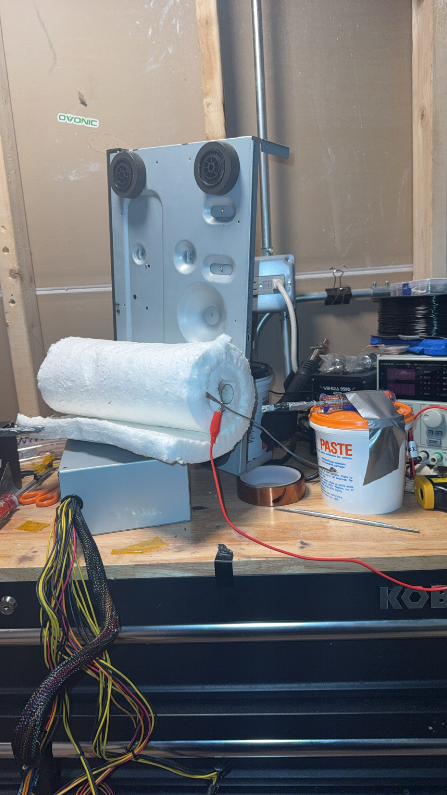
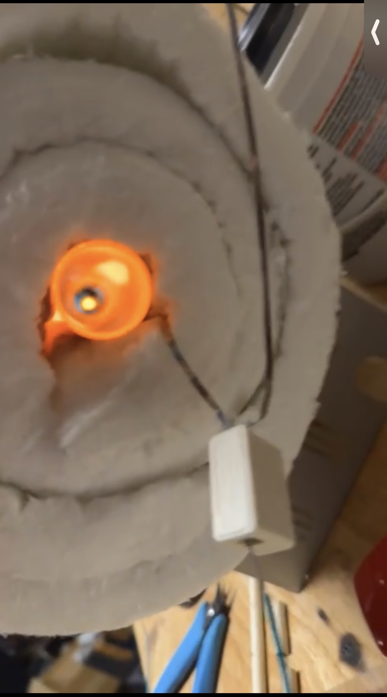

Hi! I'm Nathan. I'm a rising sophomore studying Electrical Engineering at Iowa State, originally from Park Ridge in the Chicago suburbs.
A few things I spend most of my time on:
I came to engineering through making things. I love to build and break things, and eventually build things that work. I'm most interested in the layer where electrons stop just existing and become useful, somewhere between silicon and software. (though I love coding also, even if AI took that joy from me :/)
Modern Computers are completely impossible to understand the scale of. The chip in your phone has tens of billions of transistors on a slab of silicon smaller than your thumbnail. You can understand the idea, Transistors make a bit one or zero, yadda yadda yadda, but the only way to truly understand how these things work at scale is to actually make one yourself. So thats what I did.
The Nedsey 4004 (nod to the wonderful Intel 4004, the first commercial microprocessor, though not the FIRST, that can possibly be credited to the F-14!) is a 4-bit microprocessor I designed in Logisim, a digital logic simulator. Every component, down to the individual AND, OR, NOT, and other logic gates, was places completely by hand. Every half adder to ALU was made compeltely by me, using trial and error. I'm pretty proud of it, albiet its a bad design even by 1970s standards. "4-bit" just means it can do math on numbers from 0 to 15. Not to worry, it CAN do math on bigger numbers by utilizing multiple registers, (Binary, baby!) of which it has 16. It contains a program counter that keeps track of which instruction is running, and a simple ripple carry Arithmatic Unit (ALU) that adds numbers by passing carry bits down the line. It also understands over 20 different instructions, which means you can create programs for it.
Obviously the goal wasn't to try and compete with the large semiconductor fabs, but it was the best way for me to sort of feel like I understand the internal structure of a microchip. While modern microchips are magnitudes more complicated than this, at the end of the day they're all just using a bunch of logic gates, same as the Nedsey 4004.
The creation of the Nedsey 4004 instantly led me to wonder if it would be possible to not just design, but create in real life. Is it a crazy idea? Probably, especially since semiconductor manufactoruing isn't exactly something you can do in your garage. Or is it? I decided to start easy. The first step of making any microchip is heating up a piece of silicon to grow a layer of SiO2 (silicon dioxide) on the surface of the wafer. This requires heat upwards of 1200C, and the tool for the job is a little too expensive for my taste. THis required me to make my own.


A custom furnace built to grow silicon dioxide layers on silicon wafers, getting up to 1200C. A Raspberry Pi Pico drives the heating elements with PWM, which lets the controller dial in precise heating profiles instead of just on/off. Oxide growth is a foundational step in chip fabrication, so the goal was to have a tool I could actually use for early-stage semiconductor work.
Iowa State University, Ames, IA
B.S. Electrical Engineering, Expected 2029
Maine South High School, Park Ridge, IL, Graduated June 2025
WebSiphon, Founder, 2024 to present
Tech City, Intern, Park Ridge, IL, Oct 2024 to Feb 2025
Turnkey (E-Commerce Templates), Founder, Remote, Mar 2023 to Aug 2024
Paul Vallas Chicago Mayoral Campaign, Voter Engagement Coordinator, Chicago, IL, Jan to Apr 2023
Dave Nayak Illinois State Senate Campaign, Canvasser, Jan to Mar 2024
Matt Podgorski Cook County Commissioner Campaign, Canvasser, Mar to Jun 2022
Hardware: Microchip design, PCB and electronics prototyping, Raspberry Pi (RP2040), Arduino, ESP32
Programming: C, Python, Assembly (basics)
Software: Logisim, VHDL, Fusion 360, Adobe Design Suite, Linux / Windows / macOS
Other: Campaign strategy, data analysis, social media marketing, leadership
KURE 88.5 FM, DJ, ISU campus radio
Rocketry Club, PCB design
Co-Owner, Aerospace Club, Maine South HS, 2023 to 2024. Organized member events and projects including CNC machining and rocket design.
Rock climbing, Indoor competitions and outdoor bouldering, 2019 to present